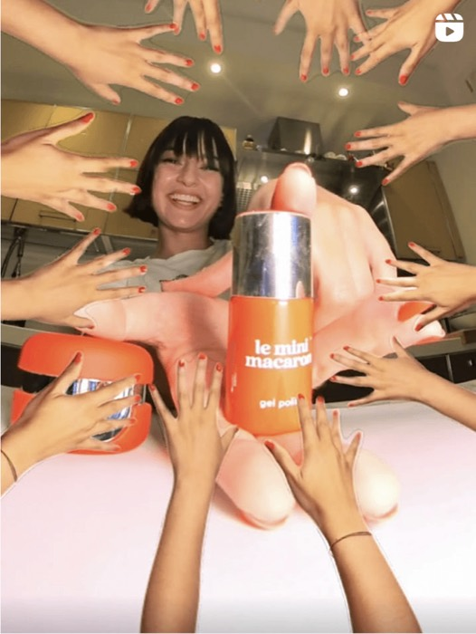

Global Social
Leading a team of three managing global social media for a fast-growing FMCG start-up.
- +20% / mo reach
- Team of 3
- Global

Overview
Leading a team of three managing global social media for a fast-growing FMCG start-up.
What I did
- Spearheaded restructuring of the social department during a major rebranding — streamlined workflows and tracking.
- Developed and executed a refreshed strategy, fully aligned with influencer and paid media.
- Oversaw content creation, scheduling, and performance analysis end to end.
- Achieved consistent +20% monthly growth in reach and a more engaged global community.